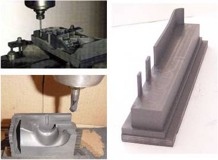

OBJETIVOS
Um dos mais versáteis materiais utilizados para eletrodo-ferramenta
em processos de eletroerosão por penetração é a
grafita. Características específicas de dureza, resistência,
microestrutura e mecanismo de atrito requerem um enfoque diferenciado daquele
aplicado à usinagem de metais, para a seleção das geometrias
de ferramentas, material de ferramenta e parâmetros de corte.
O objetivo deste trabalho é um melhor entendimento do processo
de corte da grafita industrial, principalmente aplicado ao processo de
fresamento. A utilização do material grafita é de
grande interesse entre os fabricantes de matrizes de corte e injeção,
para fabricação de eletrodos para eletroerosão. Estas
são ferramentas de importância fundamental para usinagem de
cavidades profundas ou de forma complexa.
PROCEDIMENTOS
A obtenção de informações básicas sobre
a usinagem da grafita industrial tem como etapa inicial uma revisão
bibliográfica sobre o assunto, em livros e publicações
especializadas nacionais e internacionais. Desta pesquisa será formado
um banco de dados com informações do estado da arte deste
tipo de processo.
Através de ensaios de fresamento, comparando as diferentes direções
de corte, uso ou não de meios lubri-refrigerantes e variação
de parâmetros de corte para operações de acabamento,
pretende-se obter resultados tecnologicamente úteis para a indústria
de matrizaria e ferramentas para eletroerosão.
RESULTADOS
Os resultados da pesquisa permitirão o entendimento do processo
de fabricação de eletrodos ou outros componentes a partir
de grafita, por fresamento, de maneira menos empírica, com maior
fundamento científico e com aplicação direta na indústria.
Além disto, pretende-se mostrar que a utilização da
grafita e o seu processamento são economicamente viáveis,
e que trazem também vantagens tecnológicas.
Espera-se também que esta pesquisa possa servir como referência
para futuros desenvolvimentos na área de fresamento e obtenção
de cavidades, com o uso de materiais de ferramenta e métodos de
fabricação melhores.
 |